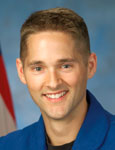

Lyndon B. Johnson Space Center
Houston, Texas 77058
|
National Aeronautics and Space Administration Lyndon B. Johnson Space Center Houston, Texas 77058 |
 |
Biographical Data |
||
James P. Dutton, Jr. (COLONEL, U.S. AIR FORCE)
NASA ASTRONAUT (FORMER)
PERSONAL DATA: Born in November 1968 in Eugene, Oregon. Married to the former Erin Ruhoff, also from Eugene. They have four sons—J.P., Will, Joey and Ryan. Dutton's parents, James Sr. and Nita Dutton, live in Newberg, Oregon. Erin's parents, Rod and Nancy Ruhoff, live in Eugene, Oregon.
EDUCATION:
ORGANIZATIONS: Society of Experimental Test Pilots, U.S. Air Force Academy Association of Graduates, Officers' Christian Fellowship, and Trinity Fellowship church.
SPECIAL HONORS: Top graduate from the United States Air Force Academy (1991), Distinguished Graduate from Euro-NATO Joint Jet Pilot Training (1992), and top graduate from F-15C student training (1995) and the U.S. Air Force Test Pilot School (2000). TIME magazine College Achievement Award recipient (1990). Bobby Bond award for top Air Force test pilot in 2003. Military decorations include a Meritorious Service Medal, Air Medal, and 10 Aerial Achievement Medals.
EXPERIENCE: Dutton has more than 3,300 flight hours in over 30 different aircraft. Prior to joining NASA, he tested the F-22 Raptor with the 411th Flight Test Squadron at Edwards Air Force Base (AFB), California. He logged more than 350 F-22 flight hours between August 2002 and June 2004 performing avionics testing and high-risk envelope expansion testing.
As a member of the U.S. Air Force Academy Class of 1991, Dutton was a member of the intercollegiate Cadet Competition Flying Team and Cadet Squadrons CS-12 "Dirty Dozen" and CS-29 "Black Panthers." After graduation, he attended undergraduate pilot training at Sheppard AFB, Texas. He went on to complete his advanced studies at the University of Washington in Seattle from 1993-1994 prior to attending F-15C training at Tyndall AFB, Florida, in 1995. Dutton flew as an operational F-15C pilot with the 493rd Fighter Squadron "Grim Reapers" at RAF Lakenheath, United Kingdom, from October 1995 to May 1998. He has flown over 100 combat hours providing air superiority in support of Operations Provide Comfort and Northern Watch over northern Iraq.
In May 1998, Dutton was reassigned to the 422nd Test & Evaluation Squadron at Nellis AFB, Nevada, where he flew operational test missions in the F-15C. He was selected to attend the U.S. Air Force Test Pilot School (TPS) and graduated with Class 00A in December 2000. After TPS, he flight tested the F-16 as a member of the 416th Flight Test Squadron until June 2002, when he joined the F-22 Combined Test Force.
NASA EXPERIENCE: Dutton was selected in May 2004 as one of 14 members of the 19th NASA astronaut class. In February 2006 he completed Astronaut Candidate Training that included scientific and technical briefings, intensive instruction in Shuttle and International Space Station systems, physiological training, T-38 flight training, and water and wilderness survival training. Dutton was initially assigned to the Exploration Branch working on the development of the Crew Exploration Vehicle (CEV) cockpit and to the Capcom Branch as a shuttle capsule communicator. He served as Ascent/Entry Capcom for STS-122 in February 2008, and STS-123 in March 2008. In 2010 Dutton was the pilot on the crew of STS-131 and has logged over 362 hours in space.
SPACE FLIGHT EXPERIENCE: STS-131 Discovery (April 5-20, 2010), a resupply mission to the International Space Station, was launched at night from the Kennedy Space Center. On arrival at the station, Discovery's crew dropped off more than 27,000 pounds of hardware, supplies and equipment, including a tank full of ammonia coolant that required three spacewalks to hook it up, new crew sleeping quarters, and three experiment racks. On the return journey the MPLM (Leonardo Multi-Purpose Logistics Module) inside Discovery's payload bay was packed with over 6,000 pounds of hardware, science results, and trash. The STS-131 mission was accomplished in 15 days, 02 hours, 47 minutes,10 seconds, and traveled 6,232,235 statute miles in 238 orbits.
JANUARY 2014